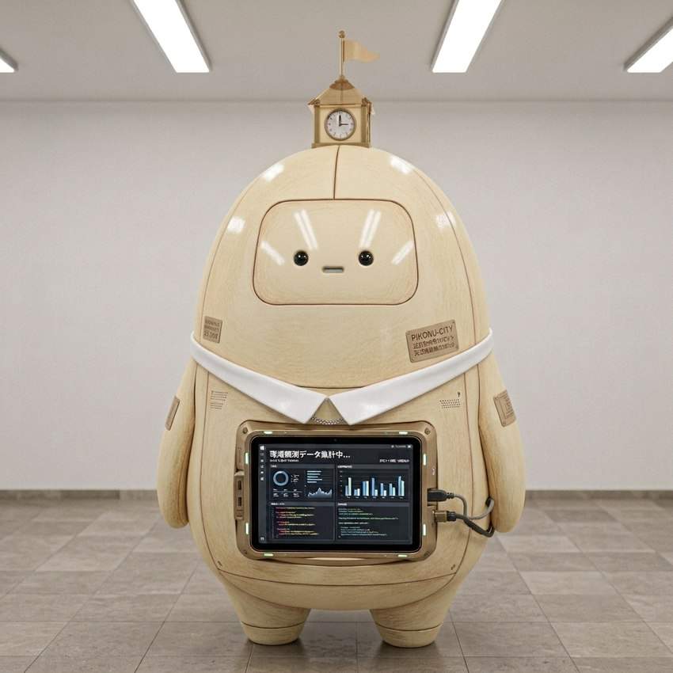

ピコぬくんは、ピコぬ市が開発・導入しているAI搭載型支援ロボットです。 市役所をはじめ、市内各施設に配置され、施設案内、各種手続きの補助、情報検索、 市民からの相談対応などを担当しています。
ピコぬ市では、人と人とのつながりを大切にしながら、必要な情報へ誰もがたどり着ける 環境づくりを進めています。ピコぬくんは、そのための「案内役」として、市民や来訪者を サポートしています。
また、ピコぬくんは単なる情報端末ではなく、市の記録文化を支える存在でもあります。 日々の業務内容や市民とのやり取りは「ピコぬくん業務日誌」として 記録されています。
基本情報
| 名称 | ピコぬくん |
|---|---|
| 種類 | AI搭載型支援ロボット |
| 主な業務 | 施設案内、情報検索、行政手続き補助 |
| 配置場所 | ピコぬ市役所各階、市内公共施設 |
ピコぬくんは利用者の状況に応じた説明を行うため、同じ質問に対して異なる回答をする
場合があります。あらかじめご了承ください。
ミニゲーム
ピコぬくんと一緒に遊べるミニゲームを公開しています。ぜひ挑戦してみてください。